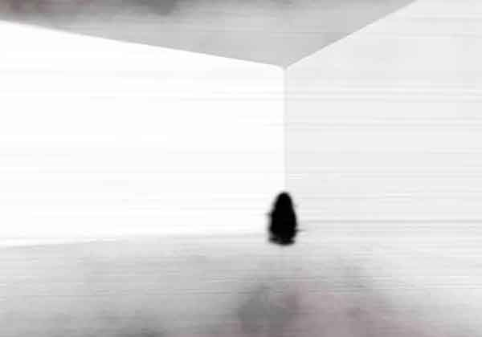

SCP-017

- Item nº:
- SCP-017
- Classe do objeto:
- Keter
Procedimentos Especiais de Contenção:
O SCP-017 é contido em uma jaula de vidro acrílico de 100 cm por 50 cm por 50 cm, suspensa no centro de uma sala de concreto de 6 m por 6 m por 4 m. Presos às paredes, ao teto e ao piso da sala há holofotes de lâmpadas de arco de alta intensidade apontados diretamente para a jaula de acrílico, para garantir que o SCP-017 esteja constantemente exposto à luz de todos os ângulos. O pessoal designado para a sala de controle do SCP-017 deve monitorar o funcionamento dos holofotes e do sistema de gerador de emergência e chamar a manutenção imediatamente ao saber de uma lâmpada queimada ou de um problema no gerador.
A única circunstância em que o pessoal tem permissão para entrar é para trocar lâmpadas. O pessoal que entra na sala deve usar os trajes refletivos de corpo inteiro designados e deve ser alertado para não pisar na frente de holofotes em funcionamento.
Descrição:
O SCP-017 é uma figura humanoide com aproximadamente 80 centímetros de altura, anatomicamente semelhante a uma criança pequena, mas sem nenhuma característica identificável. O SCP-017 parece ser composto por um manto sombrio, semelhante a fumaça. Nenhuma tentativa de encontrar algum objeto sob o manto teve sucesso, mas a possibilidade não foi descartada.
A reação do SCP-017 a sombras projetadas sobre ele é imediata e rápida. O SCP-017 salta sobre o objeto que projeta a sombra e o envolve completamente em seu manto, após o que volta ao tamanho normal, sem deixar nenhum vestígio do objeto.
Notas adicionais: O pessoal com autorização BETA ou superior deve consultar também o documento nº 017-1.